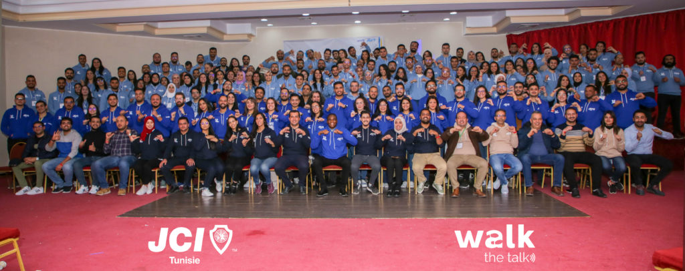
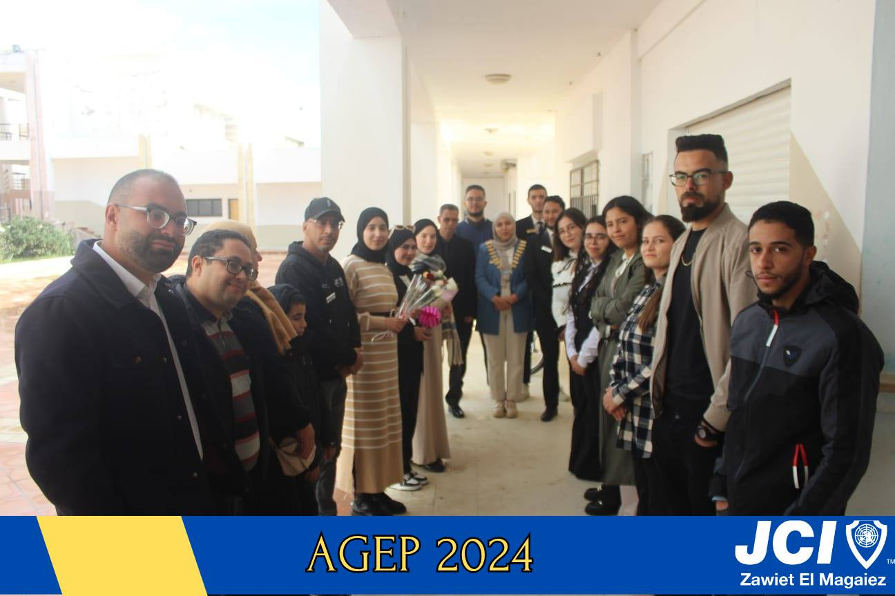

La Jeune Chambre Internationale (JCI) regroupe plus de 200 000 jeunes leaders dans plus de 100 pays.
Elle développe les compétences nécessaires pour créer des changements positifs durables.
Ses membres sont des citoyens actifs, engagés et influents.
Offrir des opportunités de développement du leadership.
Être le principal réseau mondial de jeunes citoyens actifs.

Créée en 1961 par le Dr. Salah El Mehdi.
Présente dans 24 gouvernorats avec plus de 155 OLM.
Structurée en 5 zones nationales.

Fondée le 21 septembre 2019 à Zawiet el Magaiez.
Président fondateur : Zied Snoussi.
Membre de la Zone A (Cap Bon – Grand Tunis – Zaghouan).